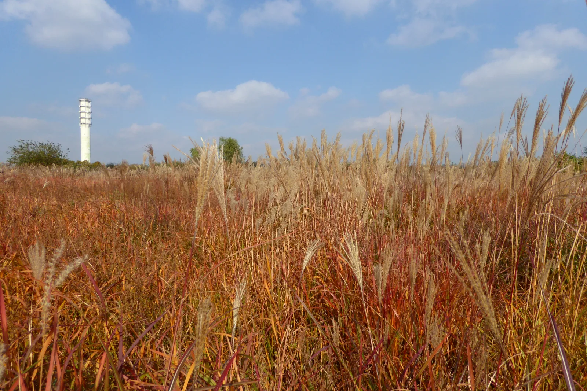
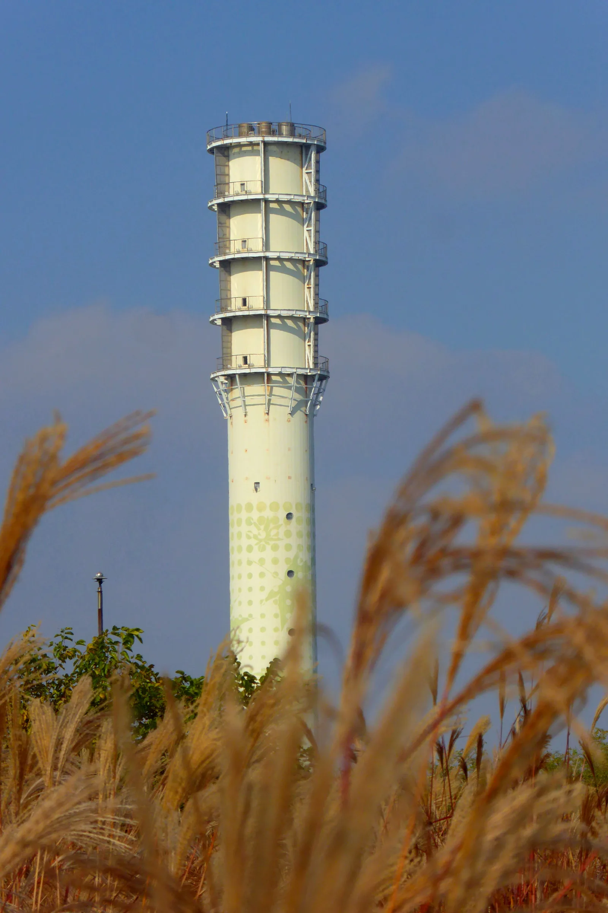
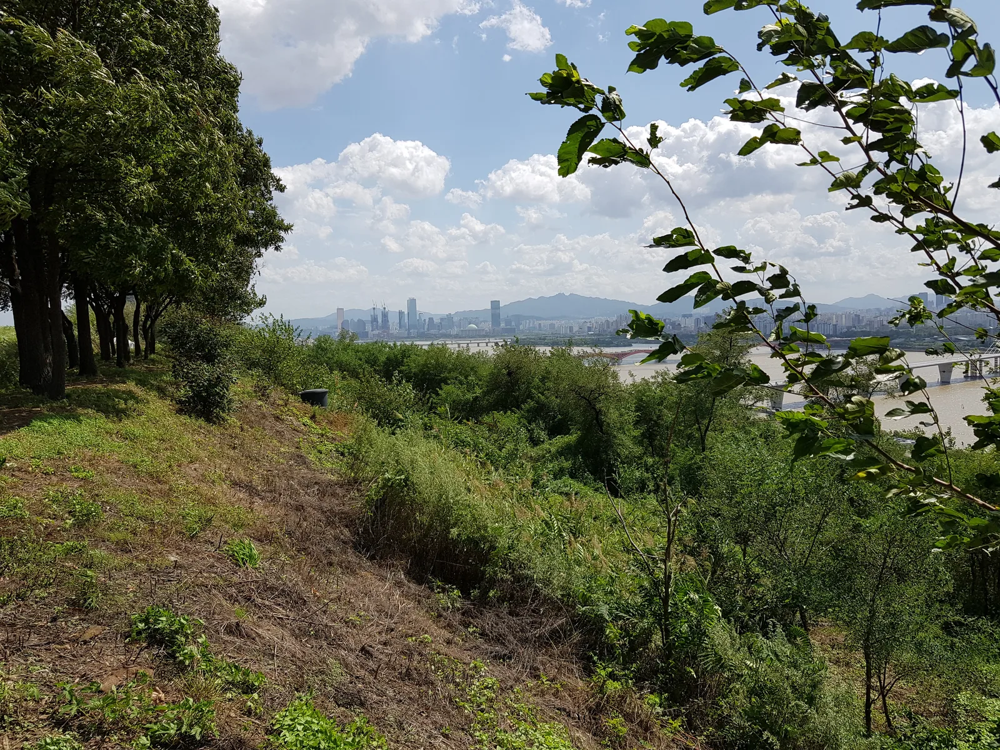
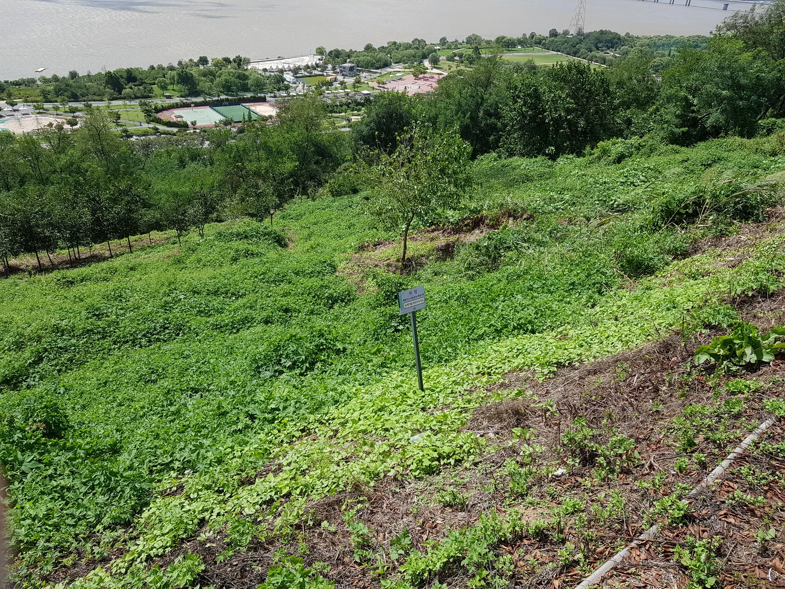
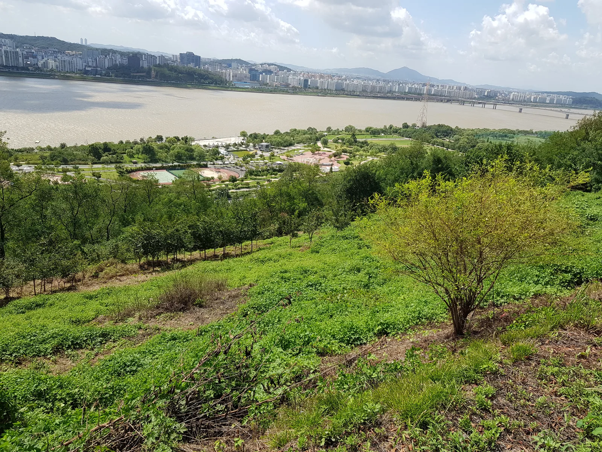
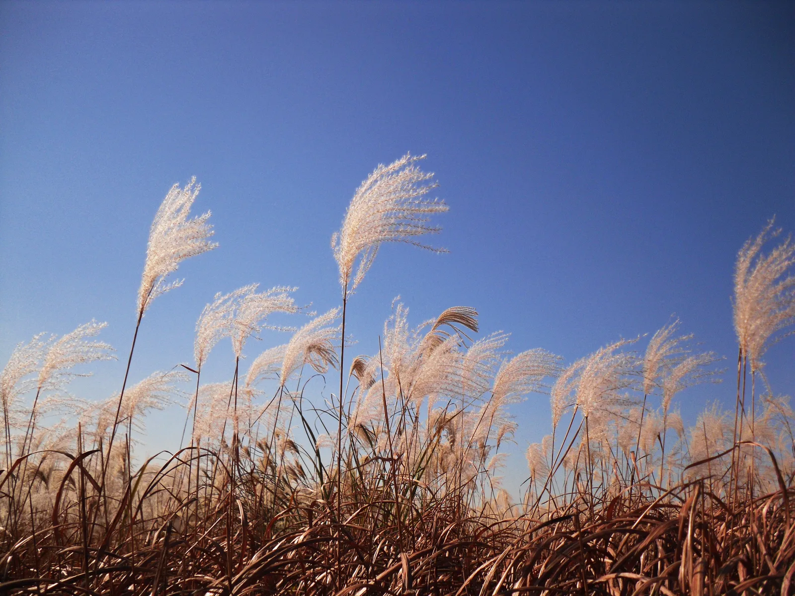
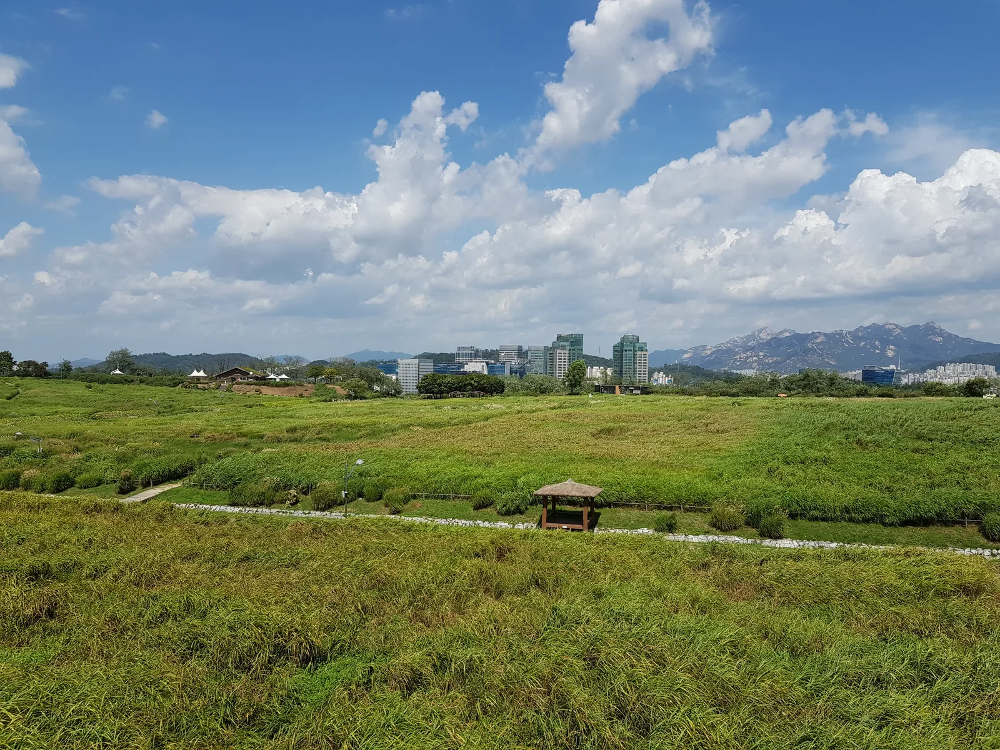
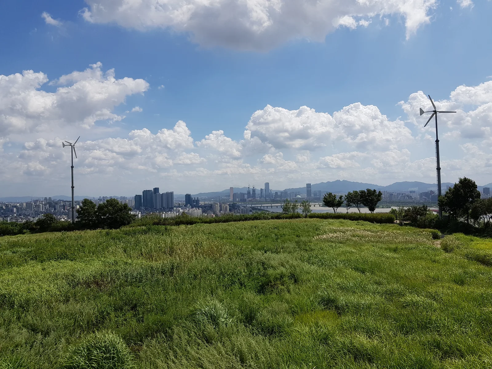

▲ 하늘공원의 억새밭. 옛 난지도 쓰레기 매립지를 덮어 조성한 언덕 위에 펼쳐져 있다 ⓒ Wikimedia Commons (CC BY-SA 4.0)
서울억새축제는 매년 가을 마포구 상암동 하늘공원에서 열린다. 2025년(24회) 기준 10월 19일부터 24일까지 열렸고, 2026년에도 비슷한 시기에 개최될 것으로 예상된다. 이 축제에서 다른 억새 명소와 결정적으로 다른 점 하나는, 억새밭 자체가 인공 언덕 꼭대기에 있다는 것이다.
1. 왜 언덕 위에 있나 — 매립지의 흔적

▲ 억새 사이로 보이는 가스 배출탑. 하늘공원이 옛 난지도 쓰레기 매립지였음을 보여주는 시설이다 ⓒ Wikimedia Commons (CC BY-SA 4.0)
하늘공원은 1978년부터 1993년까지 서울의 쓰레기를 매립했던 난지도 위에 조성된 공원이다. 매립이 끝난 뒤 그 위에 흙을 덮고 억새를 심어 지금의 언덕형 공원이 만들어졌다. 곳곳에 남아 있는 가스 배출탑이 이 땅의 과거를 보여준다. 결과적으로 방문객은 평지가 아니라 언덕 꼭대기까지 올라가야 억새밭을 만날 수 있는 구조가 됐다.

▲ 하늘공원 언덕 사이 산책로. 매립지를 덮은 흙 위로 나무와 풀이 자라 지금의 지형을 이뤘다 ⓒ Wikimedia Commons (CC BY-SA 3.0)
2. 계단이냐 모노레일이냐
| 방법 | 소요시간 | 요금 |
|---|---|---|
| 계단(291개) | 약 20~30분 | 무료 |
| 모노레일(맹꽁이 전기차) | 약 5분 | 편도 2,000원 / 왕복 3,000원 |
정상까지 오르는 방법은 두 가지뿐이다. 291개 계단을 직접 걸어 올라가거나, '맹꽁이 전기차'라는 이름의 모노레일을 타는 것이다. 계단은 무료지만 20~30분이 걸리고, 축제 기간에는 이 계단 자체가 오르내리는 인파로 혼잡해진다. 모노레일은 5분이면 충분하지만 편도 2,000원이 들고, 인기 시간대에는 탑승 대기줄이 길어질 수 있다.
3. 접근 경로 — 월드컵경기장역에서 난지천공원 주차장까지

▲ 하늘공원 언덕 아래 녹지. 계단과 모노레일 출발점은 난지천공원 쪽에 있다 ⓒ Wikimedia Commons (CC BY-SA 3.0)
지하철로는 6호선 월드컵경기장역 1번 출구에서 도보 10~15분 거리에 난지천공원 주차장이 있다. 자차로 간다면 이 주차장이 사실상의 출발점이다. 계단과 모노레일 승강장 모두 이 부근에서 시작되므로, 주차 후 어느 쪽으로 오를지는 그 자리에서 정해도 늦지 않다.

▲ 하늘공원 정상에서 내려다본 한강과 도심 전경. 계단이든 모노레일이든 이 조망을 보려면 언덕 꼭대기까지 올라야 한다 ⓒ Wikimedia Commons (CC BY-SA 3.0)
참고 축제 기간 주말에는 난지천공원 주차장도 만차가 될 수 있다. 대중교통 이용이 가장 확실한 방법이며, 자차라면 이른 시간 도착을 권장한다.
4. 억새는 언제 절정인가

▲ 은빛으로 물결치는 억새. 축제 기간이 곧 절정기와 겹치도록 매년 일정이 조정된다 ⓒ Wikimedia Commons (CC BY-SA 3.0)
억새는 10월 중순부터 은빛 이삭을 피우기 시작해 축제 기간에 절정을 이루도록 관리된다. 2025년(24회)은 '억새, 빛으로 물들다'를 주제로 10월 19일부터 24일까지 열렸고, 축제 종료 후에도 11월 초까지는 억새를 감상할 수 있도록 공원이 연장 개방됐다.

▲ 하늘공원 능선의 데크길. 억새가 절정을 이루기 전에는 이런 초록빛 초지가 펼쳐진다 ⓒ Wikimedia Commons (CC BY-SA 3.0)

▲ 하늘공원 정상부의 넓은 초지. 날씨에 따라 도심 스카이라인이 흐릿하게 겹쳐 보이기도 한다 ⓒ Wikimedia Commons (CC BY-SA 3.0)
5. 정리
체크포인트
- 하늘공원은 옛 난지도 매립지 위에 조성돼 정상까지 올라가야 억새밭을 볼 수 있다.
- 오르는 방법은 계단 291개(20~30분, 무료) 또는 모노레일(5분, 편도 2,000원) 둘 중 하나다.
- 출발점은 난지천공원 주차장, 지하철은 6호선 월드컵경기장역 1번 출구다.
- 2026년 정확한 일정은 미발표이며, 2025년 사례(10월 19~24일)를 참고 기준으로 삼을 수 있다.